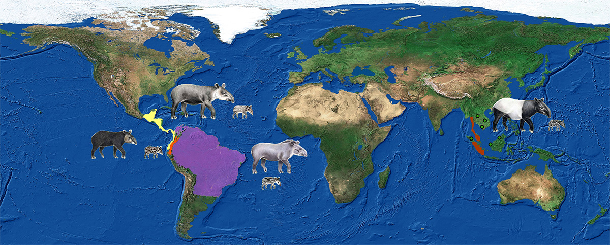

Especies similares
×

Las ubicaciones de esta especie
El tapir es un mamífero herbívoro de gran tamaño que habita en regiones tropicales de América Central y del Sur, así como en el Sudeste Asiático. Se le reconoce fácilmente por su cuerpo robusto, sus patas cortas y su distintiva trompa corta y flexible, que utiliza para alimentarse y explorar su entorno. A pesar de su apariencia similar a un cerdo o un oso hormiguero, el tapir está más emparentado con los caballos y los rinocerontes.
Existen cuatro especies de tapires en el mundo, de las cuales tres habitan en América: el tapir amazónico (Tapirus terrestris), el tapir centroamericano (Tapirus bairdii) y el tapir andino (Tapirus pinchaque). La cuarta especie, el tapir malayo (Tapirus indicus), vive en Asia. Todas ellas enfrentan algún nivel de amenaza debido a la pérdida de hábitat, la caza ilegal y la fragmentación de los ecosistemas.
Este animal desempeña un papel fundamental en la salud de los bosques. Es un excelente dispersor de semillas, ya que consume una gran variedad de frutos y plantas y, al desplazarse por amplias zonas, ayuda a regenerar la vegetación. Gracias a esto, el tapir es considerado una especie clave en la conservación de los ecosistemas donde habita.
Aunque suele ser esquivo y de hábitos nocturnos, el tapir ha capturado la atención de conservacionistas por su importancia ecológica y su vulnerabilidad. En muchas culturas indígenas se le considera un ser sabio y protector del bosque. Proteger al tapir no solo es salvar una especie, sino también conservar los bosques que son su hogar y, por ende, el de miles de otras especies.